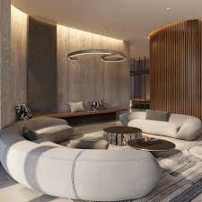
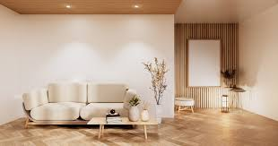
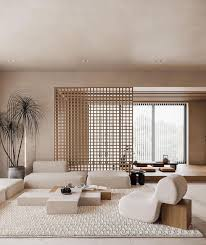
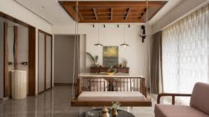
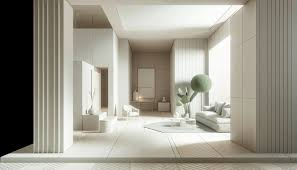
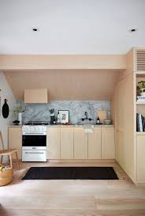

"Az daha çoxdur" fəlsəfəsi ilə yaradılmış təmiz və sakit məkanlar

Yumşaq formalı mebellər, ağ tonlar və təbii tekstura balansı

Taxta panel vurğusu, bej divan və təbii işıq. Skandinaviya rahatlığı

Asma yemək masası, taxta tavan və minimal dekorasiya

Tam ağ monoxrom dizayn, sütunlar və gizli işıqlandırma

Kiçik məkanda funksional həll. Açıq taxta şkaflar və mərmər dəzgah

Yumşaq bej divan, taxta detal və minimal aksesuarlar